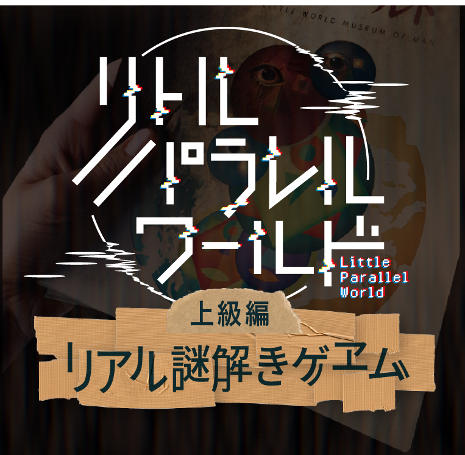
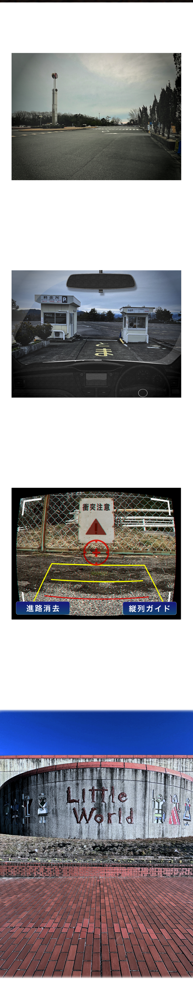
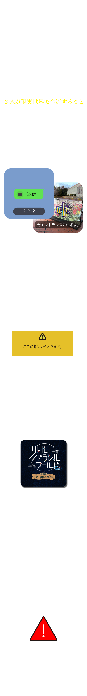
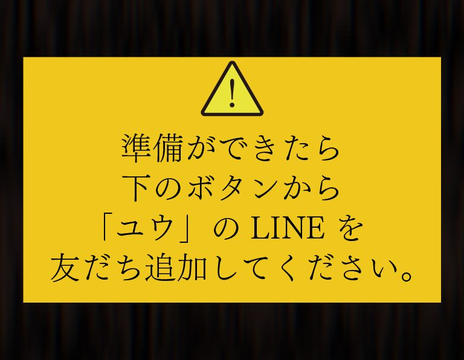
公廟内のおみくじの引き方を参照すると、
？に入る漢数字はこのようになる。
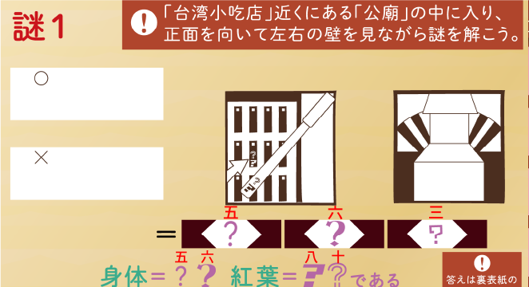
次におみくじの札がかかった壁と、問題右側のイラストを使って、
「身体＝五 六」と「紅葉＝八 十」
の意味を考えよう。
公廟内の札がかかった壁と問題のイラストを見比べて、番号の場所と対応する文字を読もう。
例えば、「五 六」は問題のイラストを確認すると「しん たい（身体）」となっている。
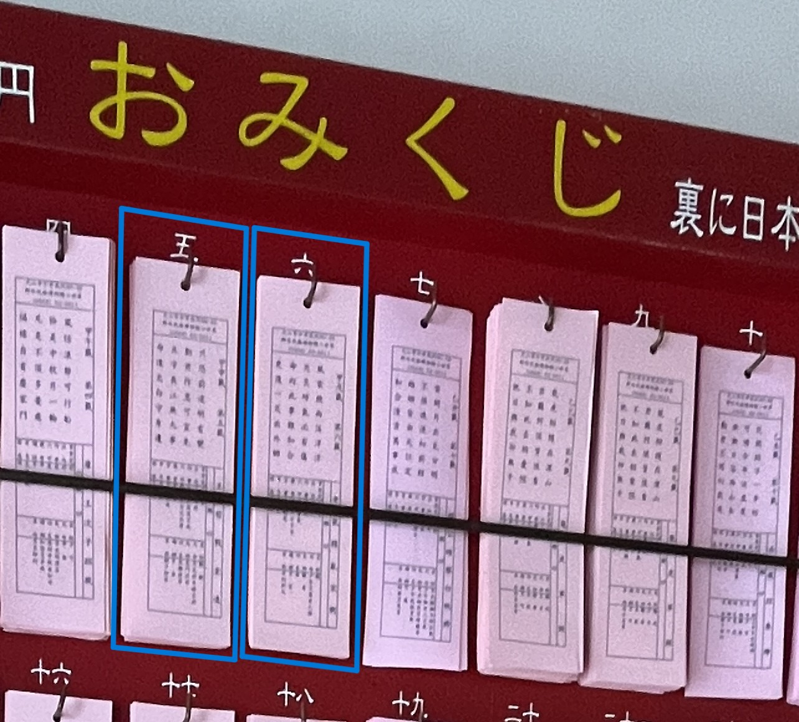
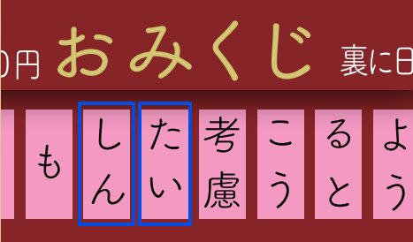
では、同じ要領で、（ ）に囲われた漢数字の文字を拾っていきたいが、すべて漢数字として捉えるとうまくいかない。
真ん中の漢数字を、別のものとして捉えよう。
括弧内の「十」や「一」は漢数字ではなく、「たす」「ひく」と捉え、計算しよう。
計算すると「五 八」を拾えば良いので
答えは「しんこう」となる。
「しんこう」とLINEに送信しよう。
問題上半分の空欄には、絵画に描かれた人物の状況や特徴を説明する言葉を考えて埋めよう。
空欄にはひらがなやカタカナが1文字ずつ入る。
※次のヒントで空欄をすべて埋めた文章が確認できます。
1番の指示にある「戦争」は説明看板のタイトルのことだ。
A側・B側両方に「戦争」とタイトルの付いた看板があるので、まずはそれを探そう。
文字化けしてしまった看板に使われている文字に着目しよう。
これは何に使われている文字だろうか？
「火火」「水水すいすい」などから、看板が曜日に変換されてしまっている。
送られた画像の断片から推測すると、
A側にあった「戦争」の看板は「土曜日」、
B側にあった「戦争」の看板は「火曜日」
の位置づけになる。
では、「祝福」と「あいさつ」は何曜日の位置づけだろうか…？
赤いマスには変換されたタイトルではなく、曜日の名称を入れよう。
どうやらA側もB側も看板は7つ並んでいるようだ。
その後、3番の指示に従おう。
曜日の名称を入れて3番の指示に従うと、
「ビス」の間を読む指示となる。
記入したひらがなも合わせて、
答えは「よびだし(呼び出し）」となる。
これをLINEに送信しよう。
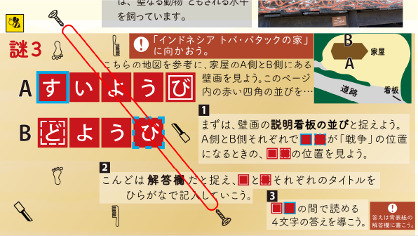
画像の中では２６７の数字の形がデジタル数字のような形に変わっている。
このような形をした２・６・７が問題のどこかに隠れているので、よく探そう。
問題の数字とカタカナの書かれたマス目の枠線を見てみよう。
線のつながり方をよく観察すると、数字が隠れている。
ユウが送ってきた画像を見ると、数字にかかるように点と線が描かれているので、その意味を考えつつ3文字の言葉を導こう。
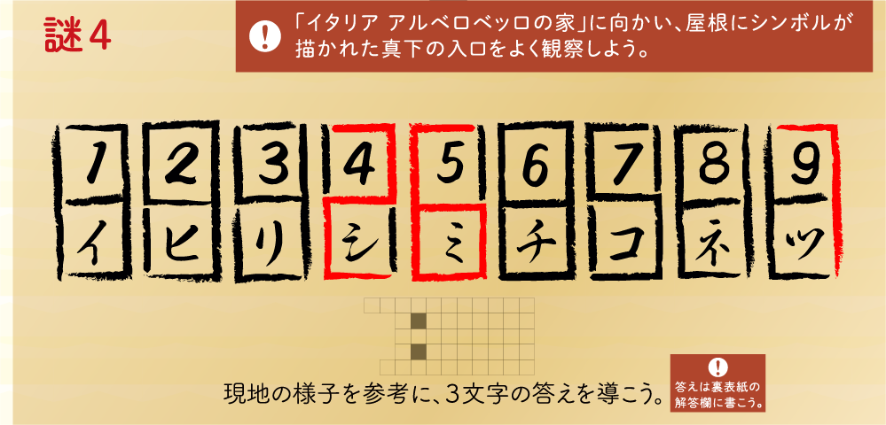
画像上で点が打たれている部分と対応するカタカナを読んでいこう。
数字の部分は通常の解き方で対応させたカタカナとして読んでいくと、答えは「しまつ（始末）」となる。
これをLINEに送信しよう。
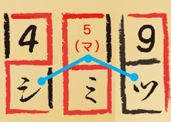
まずは問題左側の図形の中に足りない線を正確に書き込み、その後右側の同じ色のマスに線を書き写そう。
黄色と緑四角の中はそれぞれカタカナ、茶色の四角は漢字が現れる。
ピンクの四角には、もともと問題に書かれた黒い四角と合わさって、新たに漢字が浮かび上がる。
この迷路はランナータイの家の見取り図と一致している。
迷路は階段部分にあたる▲からスタートしよう。
直進して緑のAに進んでしまうとワープできる場所がないので、まずは水色のAの方向へ分岐を進もう。
通常の時と同様、問題用紙の▲からスタートしよう。
今度は真っ直ぐ緑のAに向かって進むと、ユウが送ってきた画像にも緑のAがあるので、そこにワープすることができる。
冊子と送られてきた画像を行ったり来たりして、★を目指そう。
※各設問の答えは一番最後にまとめて掲載します。
p２の地図の右下あたりに、送られてきた画像とよく似た噴水がある。
その噴水からまっすぐ下に向かって、注意事項内の文字を縦に読んでいこう。
p４のペルーに関する記事のタイトルと説明文を使おう。
３文字目はタイトルの一番最後の文字の真下の文字を拾おう。
p４の謎２の右端を使おう。
ここで拾っていく文字はすべてカタカナで書かれている。
p３の謎１、右側の文字が書かれた札の情報を使おう。
最初に拾う２文字は「めっ」の札となるので、そこから札の位置関係をよく観察して文字を拾っていこう。
p３からp９までの灰色枠のタイトルに、画像にある赤い四角が使われている。
四角の真下の文字を順番に拾っていこう。
p８の謎６の中に同じマークがある。
このマークの間をたどって文字を拾っていこう。
すべて正しく読むとこのようになる。
背景の矢印をたどると、
「つらいおもいをさせてごめん」
となるので、これをLINEに送信しよう。
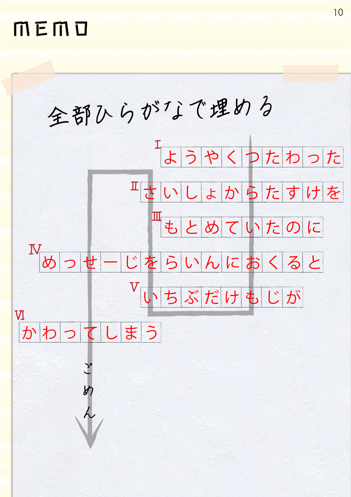
矢印の背景の四角は、謎１～７の解答欄となっている。
解答欄と見比べながら、矢印の通りに文字を拾っていこう。
途中で濁点がつく文字があることにも気を付けよう。
※ユウの写真で解いた答えで、同様のことをする必要はありません。
正しく拾うと下記の単語を拾うことができる。
１.こうすい
２.たんざく
３.みつばち
４.どんぐり
５.いでんし
６.ふね
冊子の中に香水や短冊のイラストがあるので、指示通りに冊子を折っていこう。
正しく折るとこのようになり、文章と謎が現れる。
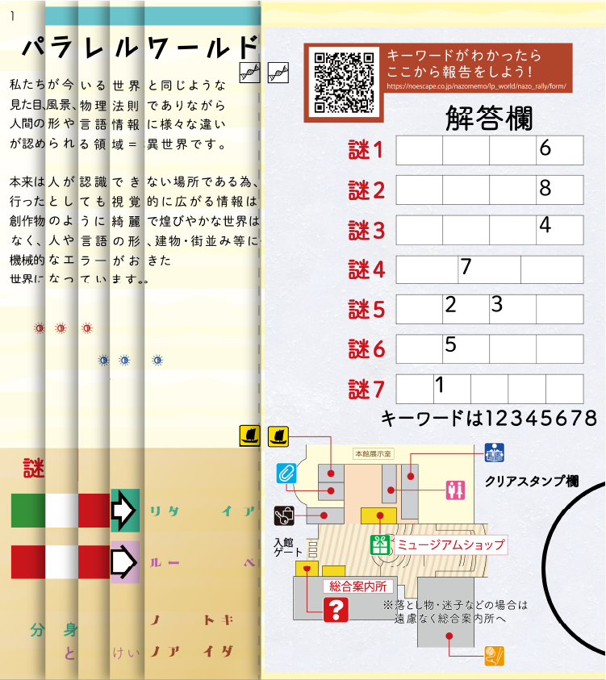
謎の中に国旗が現れており、上がイタリア、下がペルーの国旗だ。
右の文字を見ると、国名がシャッフルされてしまっているようだ。
文字の色によって、シャッフルする法則が変わるので、下の「分身（ぶんしん）」「とけい」も同じようにシャッフルしよう。
緑の字は１文字目と３文字目が入れ替わり、
ピンクの文字は最初の文字が一番最後に来る
ようにシャッフルされている。
よって分身は「新聞」に、とけいは「毛糸」に変わる。
新聞と毛糸は冊子のどこかに描かれているので、探し出してその間を見よう。
新聞と毛糸は、裏表紙の地図に載っている。
アイコンの間を読むと、
「クリップの場所へ」
と読めるので、クリップの場所（映像ホール）へ実際に向かおう。
3つ縦に並んだ赤と青の太陽をそれぞれテープ留めし、実際にハサミで冊子を点線に沿って切り落とそう。
紙が重なった部分はすべて切り落とすので、冊子全体にハサミを入れるようなイメージになる。
思い切って切ってしまおう。
冊子を切ったのち、
④の通り解答欄のほうを持ち上げると、細長い紙片が1枚落ちてくる。
引き続き⑤の指示に従おう。
魔法陣を書くにあたっては、外側の大きな円と、その中身の要素に分けることができる。
まず外側の大きな円について考えよう。
どこかにパソコンで正確に作図されて、かつ中身の要素を入れることができる、まっさらな円が冊子に載っているので、探してみよう。
謎解きラリーの冊子の裏表紙を見ると、「クリアスタンプ欄」があり、中に何も書かれていない円となっている。
冊子として印刷されている以上、パソコンを使って正確に作図されているのでこれを使っていこう。
よって行動の前半の空欄には「クリアスタンプ欄」が入る。
あとは中身の要素を考える必要がある。
手書きの魔法陣は効力がないとは言うものの、それは手書きをしてはいけないという意味ではない。
たとえ手書きであっても、最終的にユウが魔法陣を見た時に正確な図形になっていれば問題ない。
では、手書きが正確な図形になるにはどうすればいいか考えよう。
魔法陣の中身は「◎」「｜」「※」「▽」で構成されている。
この図形をどこかで見ていないだろうか。
「◎」「｜」「※」「▽」を正確に書く必要はない。
ある現象を使えば、手書きで書いた何かが、正確な形の「◎」「｜」「※」「▽」に変わる。
今まで何かが「変わってしまう」という現象を何度も見てきたはずだ。
それを活用しよう。
ユウとのLINEを思い出すと、「強制的に文字が変換される」現象が起きていた。
その現象は私からユウに文章や写真を送信するときにも起こることがわかっている。
そこで、「◎」「｜」「※」「▽」に対応する文字をユウに送れば、文字の変換が起きて正確な図形を見せることができる。
LINEを見返して、わたしが作成した対応表を参照すると、
「◎→へ」「｜→の」「※→も」「▽→じ」と対応している。
魔法陣の中身を、対応するひらがなに変換するとこのようになる。
よって、「クリアスタンプ欄」に「へのへのもへじ」を書いてLINEに送れば、わたしの世界では手書きであっても、パラレルワールドにいるユウには電子的な記号に変換されて正確な魔法陣を見ることになる。
報告欄には「クリアスタンプ欄」「へのへのもへじ」と入力して送信しよう。